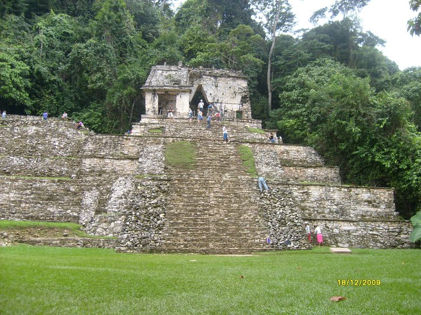
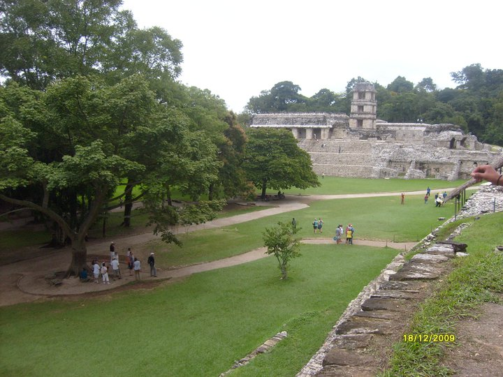
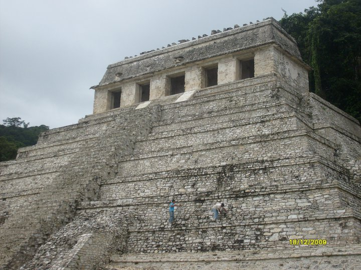
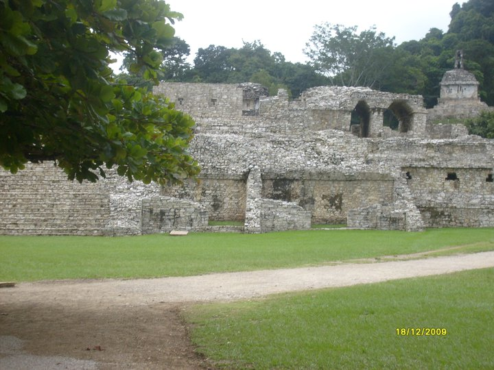
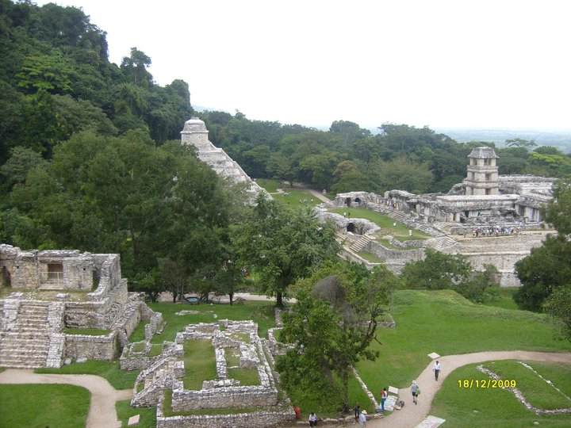
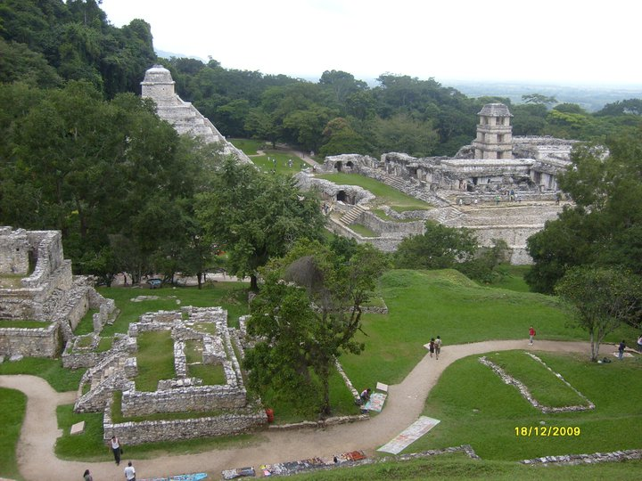

Zona arqueológica de Palenque, esta se localiza a 8 kilómetros de la Ciudad de Palenque. Zona que se encuentra rodeada de selva y misticismo, esta zona es uno de los sitios más maravillosos del país, se consideró por la UNESCO como patrimonio cultural de la humanidad.
Según las investigaciones se fundó hacia el año 100 a.C. y tuvo un desarrolló cultural que duro hasta el 900 d.C. El sitio arqueológico está formado por las de 200 estructuras arquitectónicas de diferentes tamaños.
La zona arqueológica posee una cámara funeraria de uno de los más importantes jerarcas mayas, pakal, y por sus majestuosas edificaciones como el Templo de las Inscripciones y el Palacio.
En el templo de las inscripciones es el más importante por su tamaño, la situación y su trascendencia. En resumen esta tumba es considerada la más espectacular de la América Precolombina.
El palacio es una obra arquitectónica más grande de todo Palenque y se encuentra ubicada en la parte media y central de la zona arqueológica; su belleza es incomparable. Se encuentran otras edificaciones importantes como el Templo del Conde, el Templo del Sol y el Templo de la Cruz, donde se localizó en el tablero central la imagen del monstruo de la tierra, de la cual brota una planta de maíz en forma de cruz sobre la que descansa un ave fantástica. En las ruinas de Palenque se dio el primer hallazgo, es un trono localizado en el templo XIX.
Partiendo de Tuxtla Gutiérrez
Usted tomara la carretera Panamericana 190, seguirá hacia San Cristóbal de las Casas. Llegará a un entronque de Rancho Nuevo- seguirá por la carretera 186 que conduce hacia el municipio de Ocosingo – seguirá la carretera hasta toparse con un entronque a la altura de la carretera 199.
Otra ruta- desde Tuxtla Gutiérrez:
Tomara la carretera Panamericana (a Chiapa de Corzo) continuara por la carretera Tuxtla Gutiérrez-San Cristóbal de las Casas/México 190. Tomará la salida de la izquierda – continúe recto – girara hacia la derecha con dirección a las Américas/San Cristóbal de las Casas- Comitán de Domínguez/México 190. Gire hacia su izquierda con dirección a Ocosingo-San Cristóbal de las Casas-Ocosingo/México 199. Continúe en esa dirección – girara a la izquierda con dirección a Palenque- Ruinas/Palenque Ruinas/Ruinas-Palenque. - seguirá en esa dirección hasta llegar a la Zona Arqueológica de Palenque.
Partiendo de San Cristóbal de las Casas
Ubíquese al este en Profa. María Adelina Flores hacia José Santiago – continúe por Nicolás Ruiz – gire hacia la izquierda con dirección a la Garita. Diríjase a la derecha con dirección a Periférico Ote. Sur – continúe en el Periférico hasta girar a la derecha para encontrarse en Alcantores - gire a la izquierda con dirección a las Américas/San Cristóbal de las Casas- Comitán de Domínguez/México 190 – Gire a la izquierda con dirección a Ocosingo-San Cristóbal de las Casas- Ocosingo/México 199. Seguido girara a la izquierda con dirección a Palenque-Ruinas/Ruinas- Palenque. Seguirá hasta llegar a la Zona Arqueológica de Palenque.
Usted realizara actividades vinculadas al patrimonio histórico cultural. Donde podrá visitar los sitios arqueológicos, tomar fotografías, recorrer las diferentes ruinas que ahí encontrara. Admirar la bella vegetación con la que cuenta esta zona. Y sobre todo llenarse de la cultura de los antepasados de la Zona Arqueológica de Palenque.






posicione el mouse sobre las imágenes